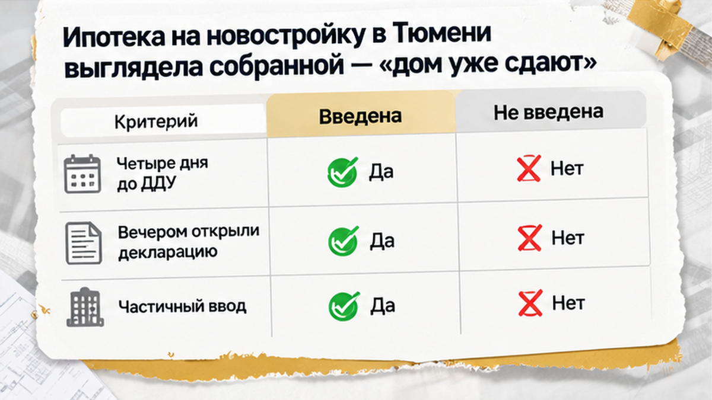
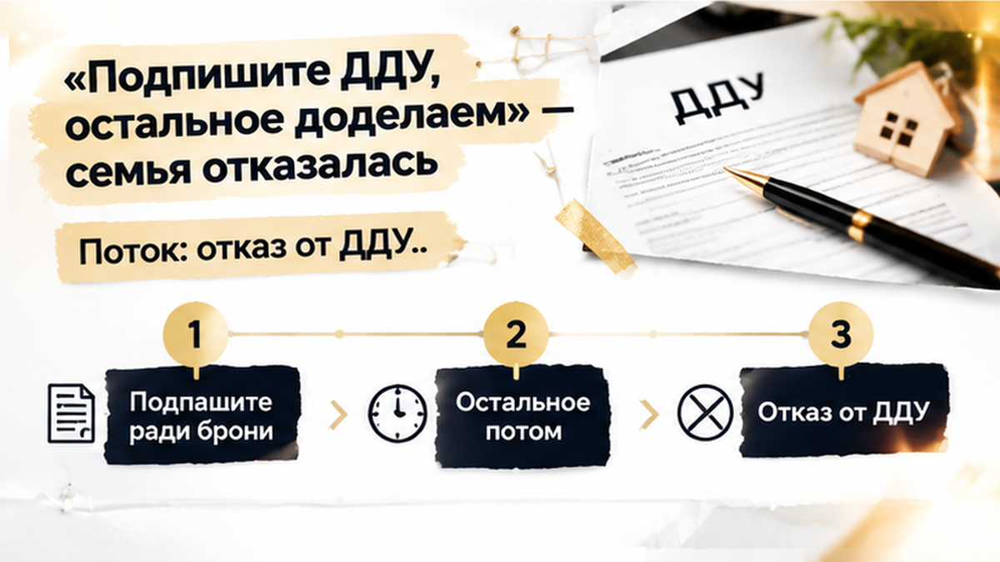
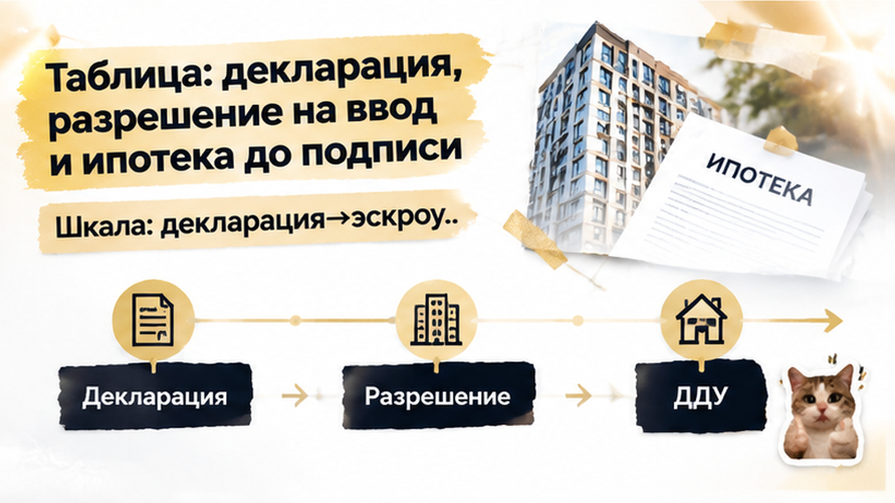

За четыре дня до подписания ДДУ банк снял предварительное одобрение, и эскроу по выбранной квартире не открыли. Бронь была оплачена, ипотека предварительно согласована, а в офисе застройщика семье говорили: «дом сдаётся, ключи скоро». Вечером перед визитом в банк покупатели открыли проектную декларацию на наш.дом.рф и увидели частичный ввод: секция с их квартирой ещё не была принята. Для ипотеки этого оказалось недостаточно.
Святослав Шакин, The Риэлтор, Тюмень. Рассказываю, где обычный покупатель видит «дом почти готов», а специалист проверяет корпус, секцию и объект залога. Подписывайтесь на канал в Telegram или переходите в MAX, если хотите проверять новостройку до брони и ДДУ.
На старте всё выглядело спокойно: подходящая квартира в многосекционной новостройке, оплаченная бронь, предварительное одобрение банка и назначенная дата подписания договора участия в долевом строительстве.
Менеджер повторял: «дом сдаётся». Для покупателя это означает, что объект почти готов. Но в многосекционном доме ввод может относиться только к отдельной очереди, корпусу или секции, а банк смотрит на конкретный объект залога.
В будущем ДДУ должны совпасть корпус, секция, этаж и номер квартиры. Если введена одна часть дома, готовность другой из этого не следует. В карточке проекта на наш.дом.рф было видно: одна секция уже введена, а секция с выбранной квартирой — ещё нет.
Для обычного покупателя это техническая деталь. Профи начинает с другого вопроса: какая именно часть объекта будет указана в ДДУ и принята банком как залог?
Здесь разрешение было, но не на ту секцию, где находилась квартира. В другом разборе я показывал случай, когда отсутствие разрешения на ввод стало причиной проблем со вторым ипотечным траншем: там речь шла о доме без разрешения на ввод в целом.

Вечером, за четыре дня до подписания ДДУ, семья ещё раз проверила проект перед визитом в банк. В карточке объекта на наш.дом.рф они нашли отметку о частичном вводе: одна секция или корпус уже значились введёнными, а секция с квартирой покупателей — ещё нет.
Так проявилась разница между разговором в офисе и документами. Менеджер описывает проект целиком: «дом сдаётся». Документы разделяют его на очереди, корпуса и секции, а банк проверяет именно ту часть, к которой относится квартира.
Проектная декларация и разрешение на ввод отвечают на разные вопросы: разрешение показывает статус конкретной части, а декларация раскрывает этапы проекта и сведения о частичном вводе. Поэтому строка «дом сдан» сама по себе ничего не решает — нужно сверить ввод с будущим ДДУ.
Практический порядок простой: найти в декларации корпус и секцию, сверить их с квартирой, а затем спросить банк, принимает ли он эту конкретную секцию как объект залога и на каких документах основано решение. Если менеджер говорит об объекте целиком, а декларация делит его на части, ориентироваться нужно на документы: офис продаёт лот, банк проверяет риск.
Похожую проверку стоит проводить и по другим обещаниям. В материале о расхождении между проектной декларацией и словами продавца я разбирал ситуацию, когда статус земли и условия проекта требовали отдельной проверки: проектная декларация против обещаний в офисе.
До ДДУ оставалось четыре дня. Ипотечная цепочка зависела от одного уточнения: введена ли именно секция с выбранной квартирой.
В многосекционной новостройке разрешение на ввод могут выдать отдельно на очередь, корпус или секцию. Поэтому фраза менеджера «дом уже сдают» не отвечает на главный вопрос: введена ли именно та секция, где находится ваша квартира.
Обычный покупатель видит готовый фасад, введённую часть дома и обещание скорых ключей. Профи сопоставляет очередь, корпус и секцию в декларации, разрешении на ввод и будущем ДДУ. Частичный ввод сам по себе не означает незаконность договора, но требует понять, что именно уже принято и какой объект банк готов взять в залог.
Разрешение на ввод показывает, какой объект получил соответствующий статус, а проектная декларация — этапы проекта. Формулировка «дом сдан» документы не заменяет.
В другом разборе я показывал ситуацию, когда разрешения не было у дома в целом и банк не дал второй ипотечный транш: там проблема была связана со всем домом. Здесь разрешение есть, но относится не к нужной секции. Для покупателя это разница в формулировке, для банка — вопрос к конкретному объекту залога.
Предварительное одобрение ипотеки — ещё не финал. До сделки банк отдельно проверяет квартиру и документы на объект залога: доходы семьи и программа могут подойти, но статус корпуса или секции изменить решение.
Так произошло и здесь. Вечером перед визитом в банк семья увидела сведения о частичном вводе. После проверки конкретной квартиры банк снял предварительное одобрение. Без письменного ответа нельзя утверждать, что причиной стала только одна запись в декларации: банк оценивает объект по своим процедурам.
Эскроу не открыли, ипотечная цепочка остановилась до перечисления денег. Одобрение доходов семьи и открытие эскроу — разные этапы. Обычный покупатель думает: «Раз банк меня уже одобрил, сделка должна пройти». Профи спрашивает: «А конкретную квартиру и секцию банк подтвердил письменно?»
В другой истории я разбирал случай, когда банк изменил условия ипотеки накануне ДДУ. Здесь вопрос возник иначе — из-за соответствия секции статусу объекта залога.
До подписи запросите у банка письменное основание пересмотра решения и уточнение, что именно проверяли: проект, корпус, секцию или квартиру. У застройщика возьмите актуальные сведения о вводе и сопоставьте их с проектной декларацией, разрешением и будущим ДДУ.
Проверьте договор бронирования: удержат ли часть суммы, если сделка не состоится из-за банка или статуса объекта. До оплаты письменно зафиксируйте корпус и секцию, статус ввода и порядок возврата денег. Звонок менеджеру создаёт спокойствие. Документ показывает, на чём оно держится.

В офисе застройщика семье предложили не торопиться: бронь оплачена, одна часть многосекционного дома введена, значит, можно подписать ДДУ, а остальное решить позже.
Для обычного покупателя это звучит убедительно: работы идут, менеджер обещает ключи. Но банк смотрит не на общий фасад и фразу «дом уже сдают», а на конкретный объект залога — корпус, секцию и квартиру.
Эти данные должны совпасть в проектной декларации, разрешении на ввод, ДДУ и ипотечном решении. Если введена одна секция, а квартира находится в другой, вопрос не исчезает.
После проверки банк пересмотрел предварительное одобрение. Частичный ввод сам по себе не означает отказ, но в этой истории ипотечное решение сняли до открытия эскроу.
Семье предложили подписать ДДУ ради сохранения брони. Покупатели отказались: на момент подписи не было согласованного банком объекта залога.
Часть брони удержали по условиям договора. Зато семья не вошла в сделку с расхождением статуса нужной секции и ипотечных ожиданий. Позже покупатели выбрали другой лот и заново прошли проверку.
Это не тот же сценарий, когда разрешения нет у всего дома и банк не выдаёт второй транш. О такой ситуации я рассказывал в разборе новостройки без разрешения на ввод. Здесь разрешение было, но вопрос возник к секции выбранной квартиры.
Не путайте этот случай и с изменением ставки перед ДДУ: здесь пересматривался сам объект залога. Сначала получите основание решения банка, потом обсуждайте бронь и договор.
Если в декларации указан частичный ввод, а продавец говорит, что дом уже сдан, подписывать ДДУ ради сохранения брони или ждать полного ввода своей секции?

Перед подписью ДДУ я бы разложил проверку по документам. Один документ не заменяет другой, а рекламная формулировка не заменяет декларацию, разрешение и подтверждение банка.
| Что проверить | Где смотреть | Что должно совпасть | Почему это важно |
|---|---|---|---|
| Проектная декларация | Карточка проекта на наш.дом.рф и актуальная форма декларации | Очередь, корпус, секция, сроки и этапы строительства | В декларации может быть указан частичный ввод, но это не подтверждает готовность секции с выбранной квартирой. |
| Разрешение на ввод | Сведения о разрешении и объекте | Именно нужный корпус или секция | Документ может относиться к отдельной очереди, корпусу или секции. Фраза «дом сдан» здесь недостаточна. |
| Будущий ДДУ | Проект договора и приложения к нему | Корпус, секция, этаж, номер квартиры и описание объекта | Эти данные нужно сверить с карточкой проекта до брони и передачи документов в банк. |
| Ипотечное решение | Личный кабинет, сообщение или письменное уведомление банка | Подтверждение по конкретной квартире и объекту залога | Предварительное одобрение не равно окончательному согласованию. При изменении статуса секции банк может пересмотреть решение. |
| Эскроу | Условия кредитного договора и ДДУ | Порядок открытия счёта после выполнения условий банка | Если ипотечная цепочка остановлена, деньги на эскроу вовремя не уйдут. |
| Бронь | Договор бронирования до оплаты | Порядок возврата или удержания денег при отказе банка | Нужно заранее понимать последствия, если банк не согласует конкретную секцию или квартиру. |
Вывод не в том, что «частичный ввод всегда запрещает сделку». Нужно установить, какая часть объекта введена и относится ли она к квартире из будущего ДДУ.
Сверьте очередь, корпус, секцию, этаж и номер квартиры. Затем попросите банк подтвердить, что именно этот объект он принимает в качестве залога. Если менеджер говорит: «Это формальность, подписывайте», попросите позицию письменно.
В отдельном материале я разбирал расхождение между проектной декларацией и обещаниями о земле под тюменским ЖК. Сначала документ. Потом бронь и ДДУ.
Нужна проверка новостройки в Тюмени до брони и ДДУ? Напишите Святославу Шакину, The Риэлтор: Telegram или MAX.
В этой истории семья отказалась от ДДУ до открытия эскроу. Часть брони удержали, но покупатели не вошли в сделку с расхождением между статусом секции и условиями ипотечного решения. Дальше они выбрали другой лот и заново проверили объект.